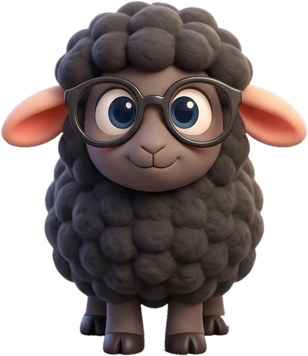

Registro de observación directa que completa la persona adulta (Decreto 196/2022, art. 13). El recurso no puntúa ni califica. No escriba nombres: utilice un código.
El progreso y los registros se guardan solo en este navegador. No se envían a ningún servidor.